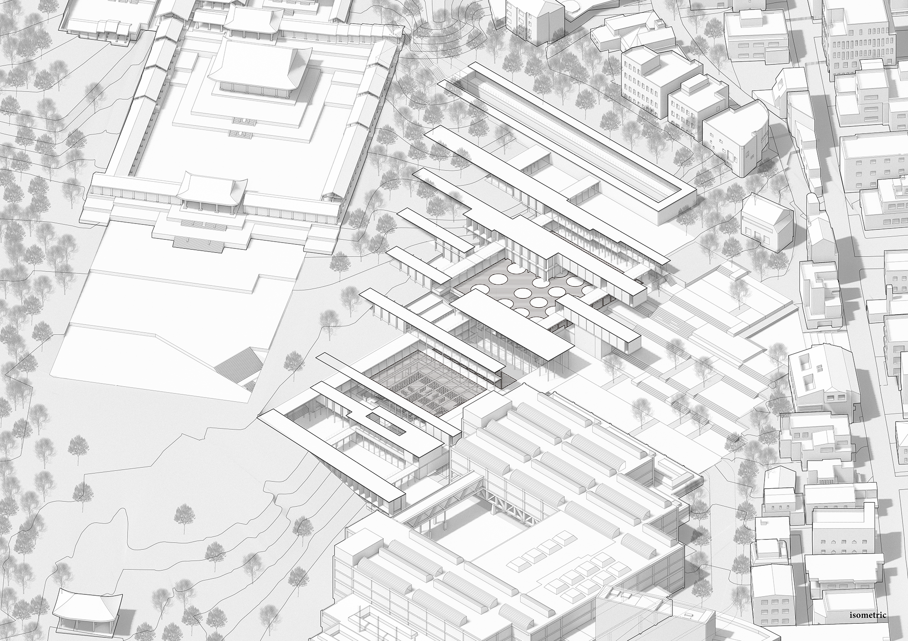

- abstract
- history
- fictions
Abstract
Gyeonghuigung Palace in Seoul is a conflicting ground where fiction and history collide.It is where 20-year old restored palace, air-raid shelter from WWII, and a history museum that sits on the very ruins of the palace are located.In light of the assertion that fiction and history are structurally identical because they are made of narratives (P. Ricoeur), architecture interweaves the two to unleash stories and interpretations. This project proposes a visible storage for museums where artifacts hitherto kept secret are revealed to the public. Forms of fiction, including library, kiosk, warehouse and silos store and display artifacts in an unprecedented method. The column system in the underground is derived from the footprint of the palace, completing the double semantic structure where forms of fiction that nest historical artifacts are nested in forms of history. Two staircases that rise from the underground nest the palace into the circulation system. The museum, the air-raid shelter, the palace, and the visible storage are integrated into one compound, and the palace is no more a solitary island but a part of the urban fabric.
LEE, JOOHYUNG
